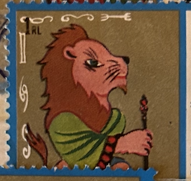
| SOURCE | TITLE| IMAGE MATCH | click to source page |
| HipStamp | Sharjah-Airmail Stamp: 1972- Apollo Space Heroes: CTO NH Mini Sheet, | Middle East - Saudi Arabia, Stamp / HipStamp | 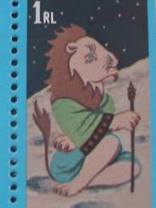 |
| Does anyone have any clue on the meaning/ what is this “animal” in the three of cups in this il minchiate deck? Been trying to learn it recently : r/tarot | 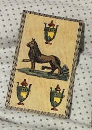 | |
| Etsy | 1970s Wood Lion - Etsy | 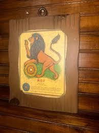 |
| Jinn associated with the zodiac sign Leo. From Kitāb-i ʻAjāʾib-i makhlūqāt (The Book of Wonders and Creatures), 1921.⠀ .⠀ .⠀ .⠀ #jinn #djinn #jinni #demonology #demon #demons #leo #astrology #occult #esoteric #esotericknowledge #folklore | 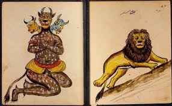 | |
| TextileAsArt.com | Persian Textiles - TextileAsArt.com, Fine Antique Textiles and Antique Textile Information | 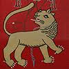 |
| AbeBooks | Al Kitab Al-Bulhan Astrologia (portfolio) by Pratt Hugo: Portfolio (1990) Signed by Author(s) | Abraxas-libris | 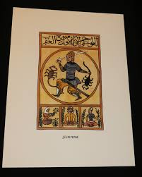 |
| Etsy | Vintage Mid Century 60s Leo Zodiac Astrology Lion Sign Symbol Plaque Wood Wooden - Etsy | 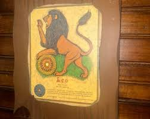 |
| eBay | Perpetual Almanac Original Drawing In Gouache Mid 18th Century | eBay | 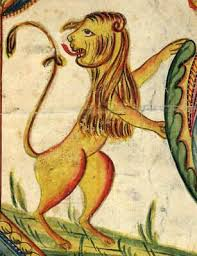 |
| ulyssesblack.com | The Illuminator (film) — the world of ulysses black | 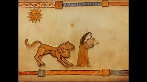 |
| shahrefarang.com | Lion and Sun | ShahreFarang | 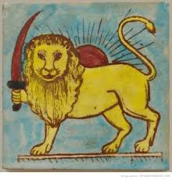 |
| Bridgeman Images | Image of The Camel of Saleh, Sura 7, verse 71: (...) this by Tunisian School, (19th century) | 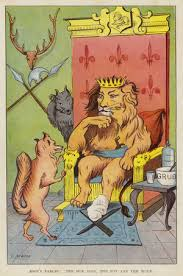 |
| LOT-ART | A Qajar Shir-o Khorshid flag, block-printed and painted on linen [Isfahan, c. 1880] in United Kingdom | 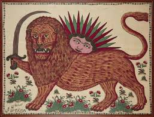 |
| 1stDibs | 1706 Heraldic Engraving of Scotland's Unicorn and Royal Arms by Coronelli at 1stDibs | 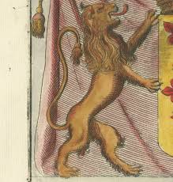 |
| unbothered. moisturized. Happy in His Lane. : r/MedievalCats | 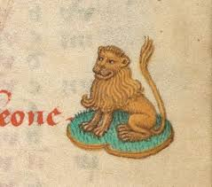 | |
| eBay | Vintage 1970s Leo Lion Astrological Sign Wall Art Zodiac Collectible | eBay | 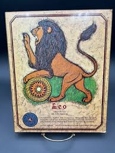 |
| Discover 170 European Folk Design and folk design ideas | folk, folk embroidery, hungarian embroidery and more | 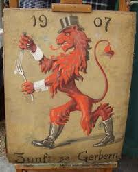 | |
| Shutterstock | 8 Ura Kida Nem Reth Royalty-Free Images, Stock Photos & Pictures | Shutterstock | 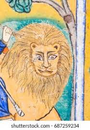 |
| CraftiHouse.com | Antique Handmade ceramic tile , lion pattern handmade tile | 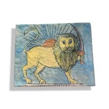 |
| ArtStation | ArtStation - Fairy mists | 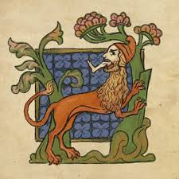 |
| 61 Fractur ideas | american folk art, folk art painting, folk art | 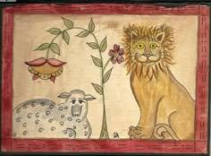 | |
| Scribal trading card drawing and painting tips | 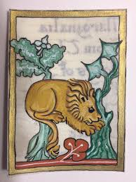 | |
| A cat would never let you know what their favorite tree is . . . But a dogwood : r/MedievalCats | 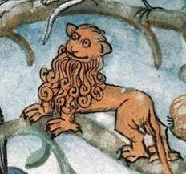 | |
| The Finnish lion, as a cub, before given the right to wield a sword... 🤣 | 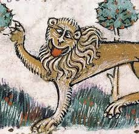 | |
| Mail skirt, riveted or belt? : r/ArmsandArmor | 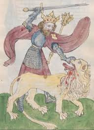 | |
| Detail from The Luttrell Psalter, British Library Add MS 42130 (medieval manuscript,1325-1340), f56r | 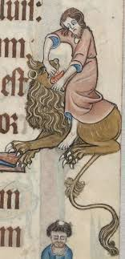 | |
| crythebird.com | 100 Day Stitch Book: Getting Started – Cry The Bird | 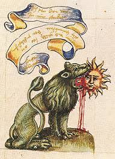 |
| Fascinaciones medievales Parte 1 #arte #pinturas #medieval | 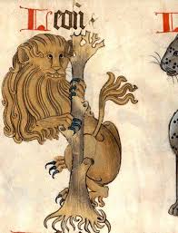 | |
| Medieval Drawings: Lion and Unicorn | 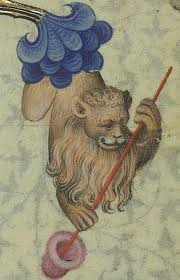 | |
| Sulis Fine Art | G Harrington & Edward Lucie-Smith - Signed Contemporary Silkscreen, The Goldfish | 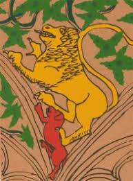 |
| friendship-bracelets.net | Pattern #83060 - friendship-bracelets.net | 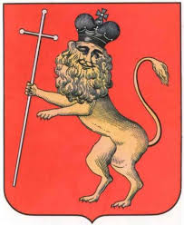 |
| Largest statue of the Baby Jesus in the world. Zacatecas, Mexico : r/Snorkblot | 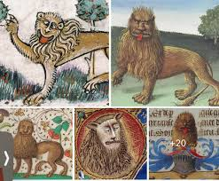 | |
| Deezer | ERIK & THE WORLDLY SAVAGES: albums, songs, concerts | Deezer | 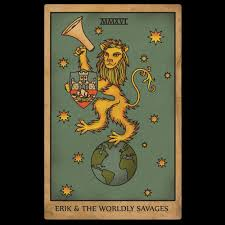 |
| Ilya Stallone on Instagram: “Leo Medieval zodiac signs Лев Средневековые знаки зодиака” | 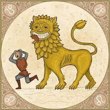 | |
| Etsy | The Scarlet Letter Cross Stitch Pattern Leo A 17th Century Canvaswork Vignette 1996 Any Skill Level (Q) - Etsy | 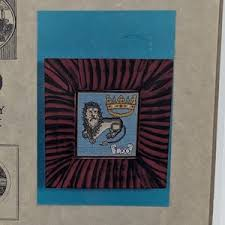 |
| Brewminate | A History of Monsters, Marvels, and Mythical Beasts | 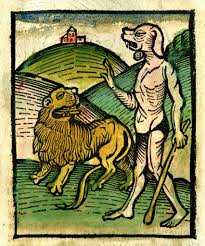 |
| iStock | Painted Leo Zodiac Sign At Jantar Mantar Astronomy Tower Stock Photo - Download Image Now - iStock | 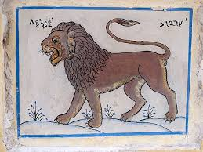 |
| Fontaine's Auction Gallery | Lot - Pr. Hand Painted Tiffany & Co. Coat of Arms | 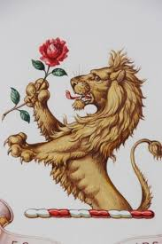 |
| What it turns out to be | 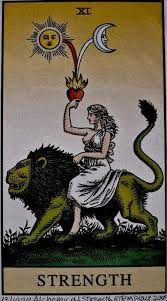 | |
| Anunnaki Ancient Aliens In The Bible & World History | 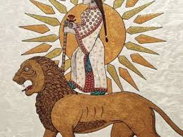 | |
| Classical Art Memes added a new photo. - Classical Art Memes | 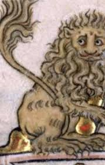 | |
| Public Domain Image Archive | Images for Tag “devils” | Public Domain Image Archive | 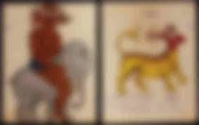 |
| X | lion, netherlands, 12th century | 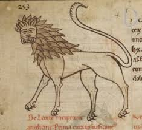 |
| "La Forza" is the Italian name for the tarot card of Strength. It symbolizes inner power, courage, and resilience. It is often depicted as a woman gently taming a lion, representing the taming of wild instincts through compassion & willpower rather than brute ... | 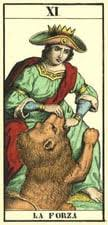 | |
| Mercari | Vintage chalkware Rooster wall hanging | Mercari | 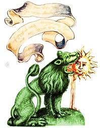 |
| Sotheby's | Very Rare Metamorphosis Booklet, Probably English, Late 18th/Early 19th Century | The Kindig Collection: Important American Furniture, Paintings, Silver & Decorative Arts | 2023 | Sotheby's | 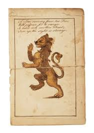 |
| Lion And Sun Symbol Meaning | 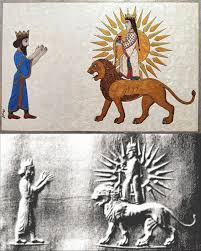 | |
| franpritchett.com | pabuji | 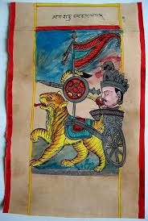 |
| Tarot in Wonderland Knight of wands | Tarocchi | 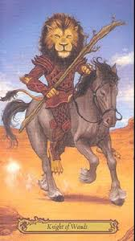 | |
| Charging into 2025...Happy New Year! : r/MedievalCreatures | 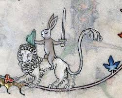 | |
| Smilodon Fatalis vs Megatherium, medieval illuminated manuscript, by me : r/Paleontology | ||
| Panchatantra inspired set of unlikely friends that manage to get the sun and the moon! The yaali, monkey, stork and parrot are whimsical and yet harken back to those stories we heard | ||
| Discogs | Serbia und Neofolk Musik | |
| X | Lion rider, Summer volume of the Breviary of Renaud de Bar, Metz ca. 1302-1305 (Verdun, BM, ms. 107, fol. 89r) | |
| The Comically Bad Way Medieval Art Portrayed Lions While medieval artists excelled at painting portraits of royalty and religious scenes, lions offered an altogether different challenge. We're pretty sure that medieval painters | ||
| Sometimes I like to pretend I am a green lion eating the sun : r/MedievalCats | ||
| Elephant Magazine | Decoding the Visual Language of Tarot Cards - ELEPHANT | |
| Calenda.org | The Physiologus between East and West | |
| Step into the world of fast-pitch softball with Rosie Black, a pitching prodigy whose speed got her kicked out of amateur ball at just 10 years old. With a staggering 99% win | ||
| Wikimedia.org | File:Astrology; signs of the zodiac, Orion. Coloured engraving. Wellcome V0024925.jpg - Wikimedia Commons | |
| Flickr | Steinhowel (colored) | Flickr |
{kind=link}